YouTube Statistics Analysis
Imports (Always run before starting)
Code cell 3
import google_auth_oauthlib.flow
import googleapiclient.discovery
import googleapiclient.errors
import pandas as pd
import numpy as np
import datetime as dt
import json
import requests
#for visualization
import matplotlib.pyplot as plt
import seaborn as sns
import wordcloud # Still Learning to use wordcloud
Contents
- Introduction
- Research question.
- Data Collection
- API setup and data retrieval code.
- Data Preprocessing
- Cleaning and feature extraction code.
- Exploratory Data Analysis (EDA)
- Visualizations and initial insights.
- Hypothesis Testing
- Statistical analysis and results.
- Conclusion
- Summary of findings and implications
1. Introduction
- Primary Question: Has there been any changes in trend of data science and AI-related videos on YouTube?
Note: This question can be further explored but I have just left it at this for the purposes of this project.
2. Data Collection
API Key
Code cell 8
# api = ##############################Prerequisites Packages
Code cell 10
#!pip install --upgrade google-api-python-clientCode cell 11
#!pip install --upgrade google-auth-oauthlib google-auth-httplib2First API call (Youtube Search)
Code cell 13
api_service_name = "youtube"
api_version = "v3"
# Get credentials and create an API client
youtube = googleapiclient.discovery.build(
api_service_name, api_version, developerKey=api)
def get_youtube_search_results(youtube, query, max_results, total_results, published_after, published_before):
all_results = []
next_page_token = None
# Created a while loop since max result for each search query is limited to 50
while len(all_results) < total_results:
request = youtube.search().list(
part = "snippet",
maxResults = max_results,
order = "date",
publishedAfter = published_after,
publishedBefore = published_before,
q = query,
videoDuration = "any",
pageToken = next_page_token
)
response = request.execute()
all_results.extend(response['items'])
next_page_token = response.get('nextPageToken')
if not next_page_token:
break
return all_results[:total_results]
results = get_youtube_search_results(
youtube,
query="Data Science | Artificial Intelligence | AI | Machine Learning | Deep Learning",
max_results=50,
total_results=1000,
published_after="2013-01-01T00:00:00Z",
published_before="2025-01-01T00:00:00Z"
)
print(type(results))
print(results)
Prep / Cleaning Data for Second API call
Checking the length of results
Code cell 16
#checking the length of results
print(len(results))Checking the first video information
Code cell 18
#checking the first video information
snippet_info = results[0]
snippet_infoText output
{'kind': 'youtube#searchResult',
'etag': 'T1Umoo3nnDgD1FvEoYmyC4d_jqM',
'id': {'kind': 'youtube#video', 'videoId': 'nkvKQhwD53M'},
'snippet': {'publishedAt': '2024-06-19T04:49:40Z',
'channelId': 'UCCRQKpGX1eaevi0BGIu9b_Q',
'title': 'RAG Vs Self-RAG #ai #naturallanguageprocessing #shorts #shortsfeed #datascience #machinelearning',
'description': 'RAG Vs Self-RAG #ai #naturallanguageprocessing #shorts #shortsfeed #datascience #machinelearning Full ...',
'thumbnails': {'default': {'url': 'https://i.ytimg.com/vi/nkvKQhwD53M/default.jpg',
'width': 120,
'height': 90},
'medium': {'url': 'https://i.ytimg.com/vi/nkvKQhwD53M/mqdefault.jpg',
'width': 320,
'height': 180},
'high': {'url': 'https://i.ytimg.com/vi/nkvKQhwD53M/hqdefault.jpg',
'width': 480,
'height': 360}},
'channelTitle': 'Datascience Monster',
'liveBroadcastContent': 'none',
'publishTime': '2024-06-19T04:49:40Z'}}Extracting relevant fields to save as dataframe.
Code cell 20
# Extracting relevant fields to save as dataframe.
video_data = []
for item in results:
video_id = item['id'].get('videoId')
if video_id: # Only appending if the video_id is not None
video_data.append({
'videoId': video_id,
'publishedAt': item['snippet']['publishedAt'],
'channelId': item['snippet']['channelId'],
'title': item['snippet']['title'],
'description': item['snippet']['description'],
'channelTitle': item['snippet']['channelTitle']
})
Video dataframe
Saving as dataframe
Code cell 23
video_df = pd.DataFrame(video_data)
video_df| videoId | publishedAt | channelId | title | description | channelTitle | |
|---|---|---|---|---|---|---|
| 0 | nkvKQhwD53M | 2024-06-19T04:49:40Z | UCCRQKpGX1eaevi0BGIu9b_Q | RAG Vs Self-RAG #ai #naturallanguageprocessin... | RAG Vs Self-RAG #ai #naturallanguageprocessing... | Datascience Monster |
| 1 | S_LwI91oxfw | 2024-06-19T04:30:17Z | UCMrZEdOcwhofuLRscG4gafQ | Master Python's NumPy for Data Science &am... | Test your NumPy knowledge in this fun and fast... | Tech Parenthesis |
| 2 | sgeqRf28sec | 2024-06-19T03:57:00Z | UCKDsG3Yo3K2wgw6qEj_MogQ | wait for end 😂😂 #cartoon #animation #funny #fu... | Shorts #ShortsTrend #ShortsChallenge #ShortsVi... | Deepu reactions |
| 3 | 4UmK7Te2a_o | 2024-06-19T02:07:00Z | UCpTh-_R2_iyCKs_Wnd-vNhw | Outlier Detection in Machine Learning: Your Ul... | Outlier Detection in Machine Learning: Your Ul... | Ashok Tapasi |
| 4 | jSAT_RuJ_Cg | 2024-06-18T22:00:01Z | UCMLtBahI5DMrt0NPvDSoIRQ | 50% on ARC Challenge?! | The ARC Challenge, created by Francois Chollet... | Machine Learning Street Talk |
| ... | ... | ... | ... | ... | ... | ... |
| 595 | uBV0w8Qwhv4 | 2019-07-01T14:30:02Z | UCsvqVGtbbyHaMoevxPAq9Fg | How To Become An Artificial Intelligence Engin... | Professional Certificate Course In AI And Mach... | Simplilearn |
| 596 | ZJixNvx9BAc | 2019-06-20T16:00:06Z | UCftwRNsjfRo08xYE31tkiyw | Machine Learning: Living in the Age of AI | A ... | Machine Learning: Living in the Age of AI,” ex... | WIRED |
| 597 | j6EB9HO6acE | 2019-06-20T14:28:17Z | UCkw4JCwteGrDHIsyIIKo4tQ | Artificial Intelligence In Healthcare | Exampl... | Machine Learning Engineer Masters Program: htt... | edureka! |
| 598 | bfmFfD2RIcg | 2019-06-19T14:30:00Z | UCsvqVGtbbyHaMoevxPAq9Fg | Neural Network In 5 Minutes | What Is A Neural... | Professional Certificate Course In AI And Mach... | Simplilearn |
| 599 | 96-u9s6D16k | 2019-06-14T09:27:51Z | UCJihyK0A38SZ6SdJirEdIOw | Genetic Algorithm in Artificial Intelligence i... | Subscribe to our new channel:https://www.youtu... | Gate Smashers |
600 rows × 6 columns
Saving the dataframe to csv for further analysis
Code cell 25
#saving the dataframe to csv for further analysis
video_df.to_csv('video_data.csv', index=False)Second API call (video stats by video id)
Code cell 27
# Extracting video_id field for second API call.
# Extracting video id if exists
video_ids = [item['id'].get('videoId') for item in results if 'videoId' in item['id']]
print(len(video_ids)) # this is to check the number of values.
Code cell 28
# Set up the API client to query for video details for each video_id
api_service_name = "youtube"
api_version = "v3"
# Initialize the API client
youtube = googleapiclient.discovery.build(
api_service_name, api_version, developerKey=api)
def get_video_details(youtube, video_ids):
all_responses = []
for i in range(0, len(video_ids), 50): #step 50 per request
group = video_ids[i:i+50] # Slice the video IDs into batches of 50
request = youtube.videos().list(
part="snippet,contentDetails,statistics",
id=','.join(group), # Join the group into a comma-separated string
maxResults=50
)
response = request.execute() # Execute the API request
all_responses.extend(response.get('items', [])) # Extend the all_responses list with the current group
return all_responses
# video_details for each video in groups
video_details = get_video_details(youtube, video_ids)
print(f"Retrieved details for {len(video_details)} videos")
Prep / Cleaning Data of the second API call
Checking if queried data is correct
Code cell 31
#checking if queried data is correct
print(f'length of the list: {len(video_details)}')
video_details[6]Text output
{'kind': 'youtube#video',
'etag': '4b0oyBfH89esrWZuKDnVa-6SMtU',
'id': 'AGzxFHlh3pk',
'snippet': {'publishedAt': '2024-06-18T22:00:05Z',
'channelId': 'UCw_LFe2pS8x3NyipGNJgeEA',
'title': 'Top 22 BEST Data Science & Analytics Certifications',
'description': "🚀 Get $1,000 Off Springboard Data Science/Analytics Bootcamp! Act fast! Limited spots.\nhttps://bit.ly/3vC7phX\n\n▬▬▬▬\n\nLooking for the best data science certifications? Check out our list of the top 22 certification programs in data science to advance your career. We'll cover data engineering certifications, data analyst certifications, and general data science / machine learning certifications.\n\nTHIS VIDEO IS A COMPILATION OF MY OTHER 3 VIDEOS COVERING CERTIFICATIONS\n\nThe information on this YouTube Channel and the resources available are for educational and informational purposes only. As an affiliate, I may earn when you sign up to websites/ for services provided in the description. This allows me to run the channel and make videos for you. Any income or earnings representations are aspirational statements only of your earning potential. There are no guarantees that you’ll receive the same results or any results at all. I am not a financial or career advisor and nothing in this video should be considered legal, financial, or professional advice.",
'thumbnails': {'default': {'url': 'https://i.ytimg.com/vi/AGzxFHlh3pk/default.jpg',
'width': 120,
'height': 90},
'medium': {'url': 'https://i.ytimg.com/vi/AGzxFHlh3pk/mqdefault.jpg',
'width': 320,
'height': 180},
'high': {'url': 'https://i.ytimg.com/vi/AGzxFHlh3pk/hqdefault.jpg',
'width': 480,
'height': 360},
'standard': {'url': 'https://i.ytimg.com/vi/AGzxFHlh3pk/sddefault.jpg',
'width': 640,
'height': 480},
'maxres': {'url': 'https://i.ytimg.com/vi/AGzxFHlh3pk/maxresdefault.jpg',
'width': 1280,
'height': 720}},
'channelTitle': 'Learn with Lukas',
'tags': ['how to become data analyst',
'data science certifications',
'Best Data Science Certifications',
'Data Science Certification Programs',
'Microsoft Certified: Azure Data Scientist Associate',
'Data Science Professional Certification',
'Data Analyst Professional Certification',
'Online Data Science Certification',
'Top Data Science Certifications',
'Best Data Analyst Certifications',
'Data Analyst Professional Certificate',
'Google Data Analytics Certificate',
'Top Data Science Certification Programs'],
'categoryId': '28',
'liveBroadcastContent': 'none',
'defaultLanguage': 'en',
'localized': {'title': 'Top 22 BEST Data Science & Analytics Certifications',
'description': "🚀 Get $1,000 Off Springboard Data Science/Analytics Bootcamp! Act fast! Limited spots.\nhttps://bit.ly/3vC7phX\n\n▬▬▬▬\n\nLooking for the best data science certifications? Check out our list of the top 22 certification programs in data science to advance your career. We'll cover data engineering certifications, data analyst certifications, and general data science / machine learning certifications.\n\nTHIS VIDEO IS A COMPILATION OF MY OTHER 3 VIDEOS COVERING CERTIFICATIONS\n\nThe information on this YouTube Channel and the resources available are for educational and informational purposes only. As an affiliate, I may earn when you sign up to websites/ for services provided in the description. This allows me to run the channel and make videos for you. Any income or earnings representations are aspirational statements only of your earning potential. There are no guarantees that you’ll receive the same results or any results at all. I am not a financial or career advisor and nothing in this video should be considered legal, financial, or professional advice."},
'defaultAudioLanguage': 'en'},
'contentDetails': {'duration': 'PT38M19S',
'dimension': '2d',
'definition': 'hd',
'caption': 'false',
'licensedContent': True,
'contentRating': {},
'projection': 'rectangular'},
'statistics': {'viewCount': '731',
'likeCount': '71',
'favoriteCount': '0',
'commentCount': '4'}}Extracting relevant fields to save as dataframe.
Code cell 33
# Extracting relevant fields to save as dataframe.
video_stats = []
for item in video_details[:]:
video_stats.append({
'channelId': item['snippet']['channelId'],
'title': item['snippet']['title'],
'description': item['snippet']['description'],
'channelTitle': item['snippet']['channelTitle'],
'tags': item['snippet'].get('tags', None),
'categoryId': item['snippet']['categoryId'],
'defaultLanguage': item['snippet'].get('defaultLanguage', None), #fill missing values with None
'viewCount': item['statistics'].get('viewCount', '0'),
'likeCount': item['statistics'].get('likeCount', '0'),
'favoriteCount': item['statistics'].get('favoriteCount', '0'),
'commentCount': item['statistics'].get('commentCount', '0')
})
Video_Stats dataframe
Converting to dataframe
Code cell 36
#converting to dataframe
video_stats_df = pd.DataFrame(video_stats)Code cell 37
#checking the dataframe
video_stats_df.head()| channelId | title | description | channelTitle | tags | categoryId | defaultLanguage | viewCount | likeCount | favoriteCount | commentCount | |
|---|---|---|---|---|---|---|---|---|---|---|---|
| 0 | UCCRQKpGX1eaevi0BGIu9b_Q | RAG Vs Self-RAG #ai #naturallanguageprocessin... | RAG Vs Self-RAG #ai #naturallanguageprocessin... | Datascience Monster | None | 22 | None | 2 | 0 | 0 | 1 |
| 1 | UCMrZEdOcwhofuLRscG4gafQ | Master Python's NumPy for Data Science & Machi... | Test your NumPy knowledge in this fun and fast... | Tech Parenthesis | [numpy, python, python numpy, pandas is built ... | 27 | None | 0 | 0 | 0 | 0 |
| 2 | UCKDsG3Yo3K2wgw6qEj_MogQ | wait for end 😂😂 #cartoon #animation #funny #fu... | #Shorts\n\n#ShortsTrend\n\n#ShortsChallenge\n\... | Deepu reactions | [viral, trending, shorts, popular, reaction, f... | 24 | hi | 0 | 0 | 0 | 0 |
| 3 | UCpTh-_R2_iyCKs_Wnd-vNhw | Outlier Detection in Machine Learning: Your Ul... | Outlier Detection in Machine Learning: Your Ul... | Ashok Tapasi | [datascience, outliers, anomaly, anomalydetect... | 27 | None | 5 | 2 | 0 | 0 |
| 4 | UCMLtBahI5DMrt0NPvDSoIRQ | 50% on ARC Challenge?! | The ARC Challenge, created by Francois Chollet... | Machine Learning Street Talk | None | 28 | None | 9256 | 479 | 0 | 109 |
Saving it to csv for furture analysis
Code cell 39
#saving it to csv for furture analysis
video_stats_df.to_csv('video_stats.csv', index=False)3. Data Processing
Read CSVs (Clean)
Code cell 42
video_df = pd.read_csv('video_data.csv')Code cell 43
v_stat_df = pd.read_csv('video_stats.csv')Checking correctly imported
Code cell 45
#not going to be using this dataframe a lot
video_df.head()| videoId | publishedAt | channelId | title | description | channelTitle | |
|---|---|---|---|---|---|---|
| 0 | nkvKQhwD53M | 2024-06-19T04:49:40Z | UCCRQKpGX1eaevi0BGIu9b_Q | RAG Vs Self-RAG #ai #naturallanguageprocessin... | RAG Vs Self-RAG #ai #naturallanguageprocessing... | Datascience Monster |
| 1 | S_LwI91oxfw | 2024-06-19T04:30:17Z | UCMrZEdOcwhofuLRscG4gafQ | Master Python's NumPy for Data Science &am... | Test your NumPy knowledge in this fun and fast... | Tech Parenthesis |
| 2 | sgeqRf28sec | 2024-06-19T03:57:00Z | UCKDsG3Yo3K2wgw6qEj_MogQ | wait for end 😂😂 #cartoon #animation #funny #fu... | Shorts #ShortsTrend #ShortsChallenge #ShortsVi... | Deepu reactions |
| 3 | 4UmK7Te2a_o | 2024-06-19T02:07:00Z | UCpTh-_R2_iyCKs_Wnd-vNhw | Outlier Detection in Machine Learning: Your Ul... | Outlier Detection in Machine Learning: Your Ul... | Ashok Tapasi |
| 4 | jSAT_RuJ_Cg | 2024-06-18T22:00:01Z | UCMLtBahI5DMrt0NPvDSoIRQ | 50% on ARC Challenge?! | The ARC Challenge, created by Francois Chollet... | Machine Learning Street Talk |
Code cell 46
v_stat_df.head()| channelId | title | description | channelTitle | tags | categoryId | defaultLanguage | viewCount | likeCount | favoriteCount | commentCount | |
|---|---|---|---|---|---|---|---|---|---|---|---|
| 0 | UCCRQKpGX1eaevi0BGIu9b_Q | RAG Vs Self-RAG #ai #naturallanguageprocessin... | RAG Vs Self-RAG #ai #naturallanguageprocessin... | Datascience Monster | NaN | 22 | NaN | 2 | 0 | 0 | 1 |
| 1 | UCMrZEdOcwhofuLRscG4gafQ | Master Python's NumPy for Data Science & Machi... | Test your NumPy knowledge in this fun and fast... | Tech Parenthesis | ['numpy', 'python', 'python numpy', 'pandas is... | 27 | NaN | 0 | 0 | 0 | 0 |
| 2 | UCKDsG3Yo3K2wgw6qEj_MogQ | wait for end 😂😂 #cartoon #animation #funny #fu... | #Shorts\n\n#ShortsTrend\n\n#ShortsChallenge\n\... | Deepu reactions | ['viral', 'trending', 'shorts', 'popular', 're... | 24 | hi | 0 | 0 | 0 | 0 |
| 3 | UCpTh-_R2_iyCKs_Wnd-vNhw | Outlier Detection in Machine Learning: Your Ul... | Outlier Detection in Machine Learning: Your Ul... | Ashok Tapasi | ['datascience', 'outliers', 'anomaly', 'anomal... | 27 | NaN | 5 | 2 | 0 | 0 |
| 4 | UCMLtBahI5DMrt0NPvDSoIRQ | 50% on ARC Challenge?! | The ARC Challenge, created by Francois Chollet... | Machine Learning Street Talk | NaN | 28 | NaN | 9256 | 479 | 0 | 109 |
Initial Exploration of Data
Checking for overall df info
Code cell 49
v_stat_df.info()Checking for any null values
Code cell 51
v_stat_df.isnull().sum()Text output
channelId 0 title 0 description 10 channelTitle 0 tags 127 categoryId 0 defaultLanguage 452 viewCount 0 likeCount 0 favoriteCount 0 commentCount 0 dtype: int64
Dropping default language as there were too many (446 out of 557) null values and is not highly relevant to the analysis.
Code cell 53
v_stat_df = v_stat_df.drop(columns=['defaultLanguage'])
v_stat_df['tags'].fillna('None', inplace=True)Checking for any duplicated values and dropping them
Code cell 55
v_stat_df.duplicated().sum()
v_stat_df.drop_duplicates(inplace=True)checking for unique values and counts for 'favoriteCount'
Code cell 57
v_stat_df['favoriteCount'].value_counts()Text output
favoriteCount 0 567 Name: count, dtype: int64
Dropping 'favoriteCount' column
Code cell 59
#since all values are 0, dropping the column
v_stat_df = v_stat_df.drop(columns=['favoriteCount'])Grabbing published dates from the video_df
Code cell 61
v_stat_df['publishedAt'] = video_df['publishedAt']
video_df['publishedAt']Text output
0 2024-06-19T04:49:40Z
1 2024-06-19T04:30:17Z
2 2024-06-19T03:57:00Z
3 2024-06-19T02:07:00Z
4 2024-06-18T22:00:01Z
...
595 2019-07-01T14:30:02Z
596 2019-06-20T16:00:06Z
597 2019-06-20T14:28:17Z
598 2019-06-19T14:30:00Z
599 2019-06-14T09:27:51Z
Name: publishedAt, Length: 567, dtype: objectChecking info for any illogical dtypes
Code cell 63
v_stat_df.info()'publishedAt' seems to be an object, converting this to datetime
Code cell 65
#setting the 'publishedAt' column to datetime format
v_stat_df['publishedAt'] = pd.to_datetime(v_stat_df['publishedAt'])
# Display the head of the dataframe
v_stat_df['publishedAt'].head()Text output
0 2024-06-19 04:49:40+00:00 1 2024-06-19 04:30:17+00:00 2 2024-06-19 03:57:00+00:00 3 2024-06-19 02:07:00+00:00 4 2024-06-18 22:00:01+00:00 Name: publishedAt, dtype: datetime64[ns, UTC]
Code cell 66
#checking the datatime conversion
v_stat_df.info()Updating Columns
Seperating year, month and day for detailed analysis
Code cell 69
#seperating year, month and day for detailed analysis
v_stat_df['year'] = v_stat_df['publishedAt'].dt.year
v_stat_df['month'] = v_stat_df['publishedAt'].dt.month
v_stat_df['day'] = v_stat_df['publishedAt'].dt.day
v_stat_df.head()| channelId | title | description | channelTitle | tags | categoryId | viewCount | likeCount | commentCount | publishedAt | year | month | day | |
|---|---|---|---|---|---|---|---|---|---|---|---|---|---|
| 0 | UCCRQKpGX1eaevi0BGIu9b_Q | RAG Vs Self-RAG #ai #naturallanguageprocessin... | RAG Vs Self-RAG #ai #naturallanguageprocessin... | Datascience Monster | None | 22 | 2 | 0 | 1 | 2024-06-19 04:49:40+00:00 | 2024 | 6 | 19 |
| 1 | UCMrZEdOcwhofuLRscG4gafQ | Master Python's NumPy for Data Science & Machi... | Test your NumPy knowledge in this fun and fast... | Tech Parenthesis | ['numpy', 'python', 'python numpy', 'pandas is... | 27 | 0 | 0 | 0 | 2024-06-19 04:30:17+00:00 | 2024 | 6 | 19 |
| 2 | UCKDsG3Yo3K2wgw6qEj_MogQ | wait for end 😂😂 #cartoon #animation #funny #fu... | #Shorts\n\n#ShortsTrend\n\n#ShortsChallenge\n\... | Deepu reactions | ['viral', 'trending', 'shorts', 'popular', 're... | 24 | 0 | 0 | 0 | 2024-06-19 03:57:00+00:00 | 2024 | 6 | 19 |
| 3 | UCpTh-_R2_iyCKs_Wnd-vNhw | Outlier Detection in Machine Learning: Your Ul... | Outlier Detection in Machine Learning: Your Ul... | Ashok Tapasi | ['datascience', 'outliers', 'anomaly', 'anomal... | 27 | 5 | 2 | 0 | 2024-06-19 02:07:00+00:00 | 2024 | 6 | 19 |
| 4 | UCMLtBahI5DMrt0NPvDSoIRQ | 50% on ARC Challenge?! | The ARC Challenge, created by Francois Chollet... | Machine Learning Street Talk | None | 28 | 9256 | 479 | 109 | 2024-06-18 22:00:01+00:00 | 2024 | 6 | 18 |
Counting length of title (new column)
Code cell 71
#new column for counting length of title.(code is counting number of spaces + 1)
v_stat_df['title_count'] = v_stat_df['title'].str.count(' ') + 1
v_stat_df.head()| channelId | title | description | channelTitle | tags | categoryId | viewCount | likeCount | commentCount | publishedAt | year | month | day | title_count | |
|---|---|---|---|---|---|---|---|---|---|---|---|---|---|---|
| 0 | UCCRQKpGX1eaevi0BGIu9b_Q | RAG Vs Self-RAG #ai #naturallanguageprocessin... | RAG Vs Self-RAG #ai #naturallanguageprocessin... | Datascience Monster | None | 22 | 2 | 0 | 1 | 2024-06-19 04:49:40+00:00 | 2024 | 6 | 19 | 11 |
| 1 | UCMrZEdOcwhofuLRscG4gafQ | Master Python's NumPy for Data Science & Machi... | Test your NumPy knowledge in this fun and fast... | Tech Parenthesis | ['numpy', 'python', 'python numpy', 'pandas is... | 27 | 0 | 0 | 0 | 2024-06-19 04:30:17+00:00 | 2024 | 6 | 19 | 11 |
| 2 | UCKDsG3Yo3K2wgw6qEj_MogQ | wait for end 😂😂 #cartoon #animation #funny #fu... | #Shorts\n\n#ShortsTrend\n\n#ShortsChallenge\n\... | Deepu reactions | ['viral', 'trending', 'shorts', 'popular', 're... | 24 | 0 | 0 | 0 | 2024-06-19 03:57:00+00:00 | 2024 | 6 | 19 | 13 |
| 3 | UCpTh-_R2_iyCKs_Wnd-vNhw | Outlier Detection in Machine Learning: Your Ul... | Outlier Detection in Machine Learning: Your Ul... | Ashok Tapasi | ['datascience', 'outliers', 'anomaly', 'anomal... | 27 | 5 | 2 | 0 | 2024-06-19 02:07:00+00:00 | 2024 | 6 | 19 | 13 |
| 4 | UCMLtBahI5DMrt0NPvDSoIRQ | 50% on ARC Challenge?! | The ARC Challenge, created by Francois Chollet... | Machine Learning Street Talk | None | 28 | 9256 | 479 | 109 | 2024-06-18 22:00:01+00:00 | 2024 | 6 | 18 | 4 |
Code cell 72
#checking if there are any null values in the title word count
v_stat_df['title_count'].isnull().sum()Text output
0
Code cell 73
v_stat_df.to_csv(r'C:\Users\GGPC\IoD_Mini_Projects\Mini_Project_1\Updated csv\Updated_video_stats.csv', index=False)4. Exploratory Data Analysis (EDA)
Read CSV (Updated)
Code cell 76
data = pd.read_csv(r'C:\Users\GGPC\IoD_Mini_Projects\Mini_Project_1\Updated csv\Updated_video_stats.csv')
v_stat = pd.DataFrame(data)Code cell 77
v_stat.info()With datetime, when saved as csv and reading it back, it can turn it back into object
Code cell 79
#setting the 'publishedAt' column to datetime format....again....
v_stat['publishedAt'] = pd.to_datetime(v_stat['publishedAt'])
# Display the info of the column to check
v_stat['publishedAt'].info()Code cell 80
#checking unique values of publishedAt
v_stat['publishedAt'].unique()Text output
<DatetimeArray> ['2024-06-19 04:49:40+00:00', '2024-06-19 04:30:17+00:00', '2024-06-19 03:57:00+00:00', '2024-06-19 02:07:00+00:00', '2024-06-18 22:00:01+00:00', '2024-06-18 22:00:21+00:00', '2024-06-18 22:00:05+00:00', '2024-06-18 20:51:33+00:00', '2024-06-18 18:00:33+00:00', '2024-06-18 18:00:17+00:00', ... '2019-08-06 15:19:25+00:00', '2019-07-28 05:27:28+00:00', '2019-07-26 14:06:50+00:00', '2019-07-21 08:33:22+00:00', '2019-07-04 19:36:13+00:00', '2019-07-01 14:30:02+00:00', '2019-06-20 16:00:06+00:00', '2019-06-20 14:28:17+00:00', '2019-06-19 14:30:00+00:00', '2019-06-14 09:27:51+00:00'] Length: 566, dtype: datetime64[ns, UTC]
Numerical Analysis
Summary Statistics
Code cell 83
print(v_stat.describe())Overall Observations
-
[View_Count], [Like_Count], and [Comment_Count] all show signs of high variability with potential outliers, suggesting that a small number of videos have very high engagement metrics while most videos have relatively lower engagement.
-
[Year], [Month], and [Day] distributions indicate a balanced dataset over time, allowing for meaningful trend analysis.
-
[Title_Count] shows some variability in the number of words in video titles
Detailed Observations
-
For 'categoryId' the minimum category ID is 1, and the maximum is 29 with a mean of 26.5. The majority of videos fall within a narrow range around 27.
-
For 'viewCount the mean view count is 316,711, but the standard deviation is extremely high (1,452,242), which indicates many videos having a low view count and a few having very high view counts, suggesting the presence of outliers.
-
For 'likeCount' the mean like count is 7,202, with a very high standard deviation of 32,899. (potential outliers)
-
For 'commentCount' the mean comment count is 267, with a standard deviation of 1,287.Also number of comments ranges from 0 to over 20,000 (potential outliers)
-
For 'year' the dataset covers the years from 2019 to 2024, with a mean year of around 2021.45, indicating a fairly balanced distribution over these years.
-
For 'month' the mean month is 6.40, indicating a spread throughout the year with no significant concentration in any specific month.
-
For 'day' the mean day is 16.14, indicating a fairly even distribution of video publication dates throughout the month.
-
For 'title_count' the average title length is 12.19 words, with a standard deviation of 3.39 words, indicating some variability in title lengths.
Distribution of Numerical Features
Code cell 88
#filtering the dataset to remove outliers for the purposed of distribution
view_count_filtered = v_stat['viewCount'].quantile(0.75)
like_count_filtered = v_stat['likeCount'].quantile(0.75)
commnet_count_filtered = v_stat['commentCount'].quantile(0.75)
filtered_v_stat = v_stat[(v_stat['viewCount'] <= view_count_filtered) &
(v_stat['likeCount'] <= like_count_filtered) &
(v_stat['commentCount'] <= commnet_count_filtered)
]
# setting up list for numerical columns
numerical_columns = ['viewCount',
'likeCount',
'commentCount',
'year',
'month',
'day',
'title_count'
]
#checking the distribution of numerical columns - difficulty in using FacetGrid so just went with for loop
for column in numerical_columns:
sns.histplot(data=filtered_v_stat, x=column, bins=20, kde=True) # change v_stat to filtered_v_stat for outlier removal
plt.title(f'Distribution of {column}')
plt.xlabel(column)
plt.ylabel('Frequency')
plt.show()
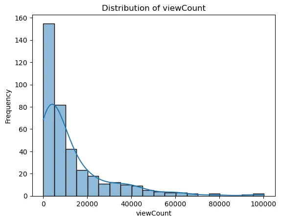
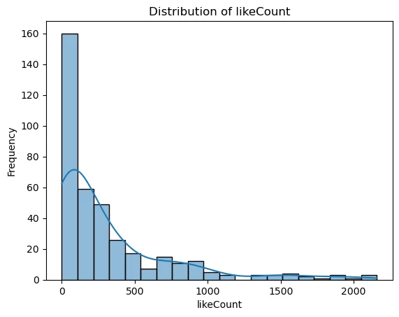
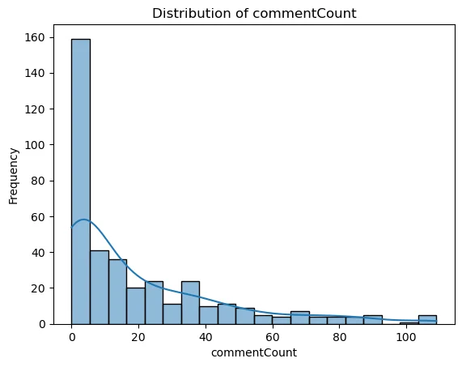
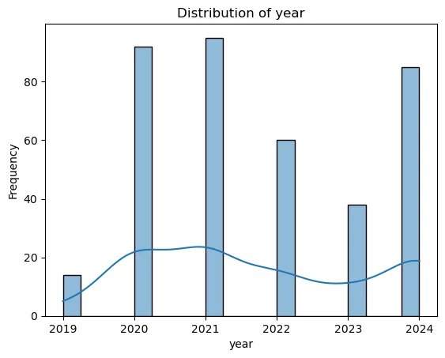
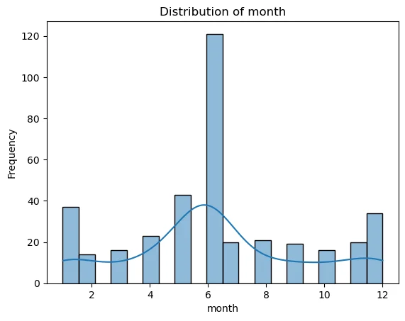
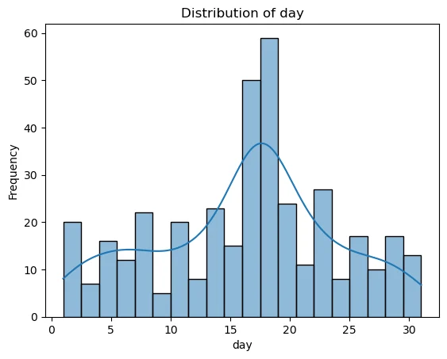
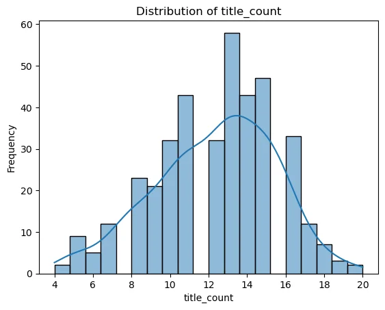
- View Count: Most videos have a low view count, with a few videos having extremely high view counts, indicating a highly skewed distribution.
-
Like Count: Similar to view count, the like count is also highly skewed, with most videos having very few likes and a few having extremely high like counts.
-
Comment Count: The distribution of comment counts follows a similar pattern, with most videos having few comments and a small number having many comments.
- Year, Month, Day: These features show a more uniform distribution except for some peaks, particularly in the mid-year and around specific days.
- Title Count: Follows a somewhat normal distribution but slightly skewed.
Categorical Analysis
Number of Views Per Category
Code cell 92
#checking category ids
counts = v_stat['categoryId'].value_counts()
counts.sort_index()Text output
categoryId 1 2 22 52 24 14 25 3 26 2 27 382 28 111 29 1 Name: count, dtype: int64
Defining Category Names
Code cell 94
#Define Category Names
category_names = {
1: 'Film & Animation',
22: 'People & Blogs',
24: 'Entertainment',
25: 'News & Politics',
26: 'Howto & Style',
27: 'Education',
28: 'Science & Technology',
29: 'Nonprofits & Activism',
}
#assigning category names
v_stat['CategoryName'] = v_stat['categoryId'].map(category_names)Code cell 95
#total view count per category
plt.figure(figsize=(12, 6))
sns.barplot(x='CategoryName', y='viewCount', data=v_stat, estimator=sum, errorbar=None,
order=filtered_v_stat.groupby('CategoryName')['viewCount'].sum().sort_values(ascending=False).index)
plt.title('Total View Count per Category')
plt.xlabel('Category')
plt.ylabel('Total View Count')
plt.xticks(rotation=90)
plt.show()
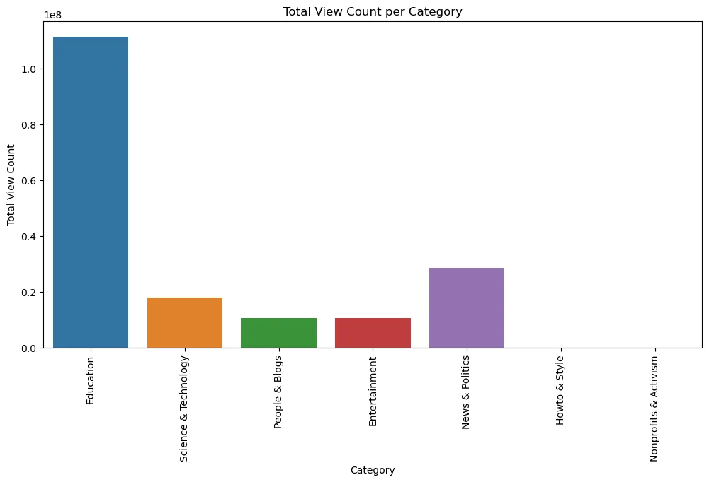
-
The graph clearly shows that Education is the most popular category by a large margin, with over 100 million total views.
-
News & Politics also attracts a significant number of views, followed by Science & Technology.
-
Categories like People & Blogs and Entertainment have moderate viewer count.
-
Howto & Style and Nonprofits & Activism have the least viewer count.
Yearly Number of Views per Category
Code cell 98
#setup groupby and number of videos
views_per_year = v_stat.groupby(['year', 'CategoryName'])['viewCount'].sum().reset_index(name='Total_View_Count')
#set index to year and columns to category name and using pivot
views_per_year_category = views_per_year.pivot(index='year', columns='CategoryName', values='Total_View_Count')
#plot the bar chart
views_per_year_category.plot(kind='barh', stacked=True, figsize=(10, 7), colormap='tab10')
plt.title('Yearly Total View Count per Category')
plt.xlabel('Total View Count')
plt.ylabel('Year')
plt.legend(title='Category Name', bbox_to_anchor=(1.05, 1), loc='upper left')
plt.tight_layout()
plt.show()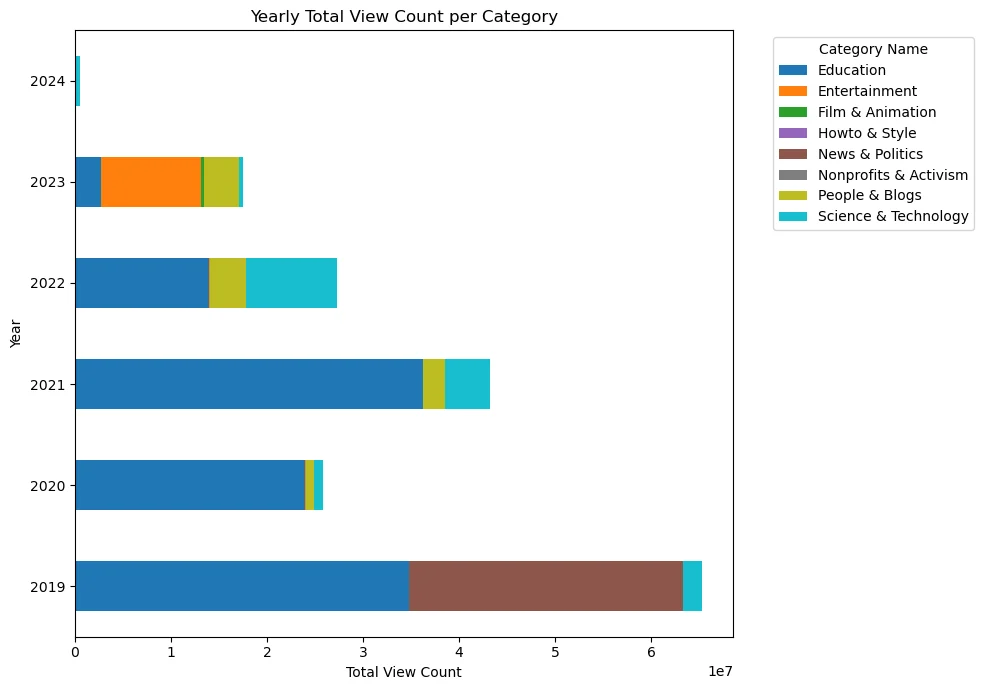
-
Education consistently has the highest total view count across all years, making it the most popular category.
-
The total view count fluctuates over the years, with the highest in 2019 and a general increase from 2020 to 2022.
-
Other categories like News & Politics, Science & Technology, and Entertainment also have contributions.
-
The total view count in 2024 is notably low, likely due to incomplete data for the year.
Relationship Analysis
relationship between numerical features
Code cell 102
#relationship between numerical features to view count
sns.pairplot(v_stat.select_dtypes('number'), diag_kind='kde', hue='viewCount')
plt.show()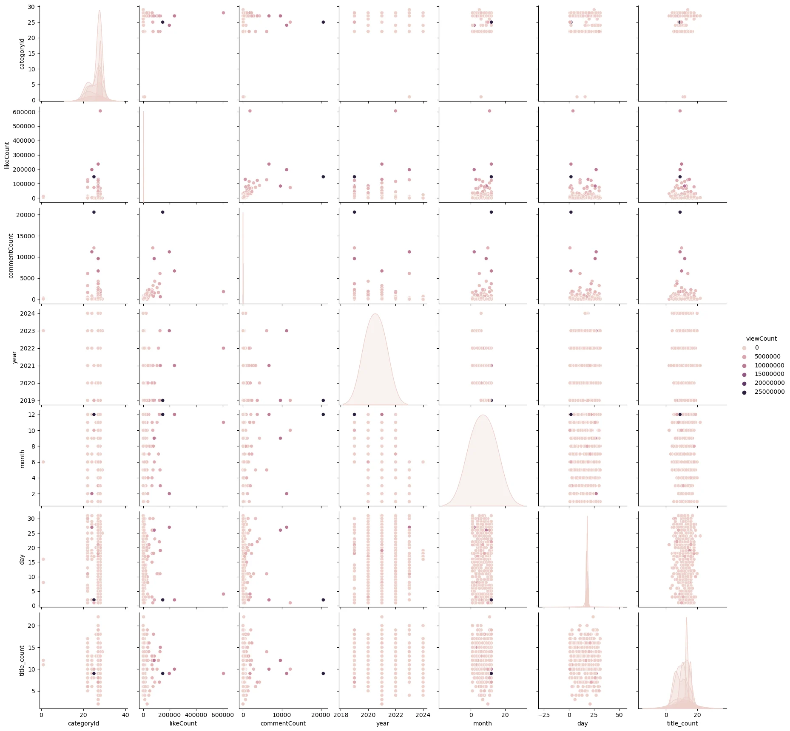
Correlation between numerical features
Code cell 104
#correlation between numerical features
v_stat[numerical_columns].corr()| viewCount | likeCount | commentCount | year | month | day | title_count | |
|---|---|---|---|---|---|---|---|
| viewCount | 1.000000 | 0.636386 | 0.886156 | -0.139701 | 0.094600 | -0.070259 | -0.066117 |
| likeCount | 0.636386 | 1.000000 | 0.517025 | -0.079077 | 0.104410 | -0.074997 | -0.100447 |
| commentCount | 0.886156 | 0.517025 | 1.000000 | -0.135958 | 0.095895 | -0.059295 | -0.093168 |
| year | -0.139701 | -0.079077 | -0.135958 | 1.000000 | -0.226906 | 0.078575 | -0.112879 |
| month | 0.094600 | 0.104410 | 0.095895 | -0.226906 | 1.000000 | 0.019350 | -0.006239 |
| day | -0.070259 | -0.074997 | -0.059295 | 0.078575 | 0.019350 | 1.000000 | -0.012612 |
| title_count | -0.066117 | -0.100447 | -0.093168 | -0.112879 | -0.006239 | -0.012612 | 1.000000 |
Finding correlation values in decending order
Code cell 106
corr_matrix = v_stat[numerical_columns].corr()
# Unstack the correlation matrix - each row of information into columns
corr_unstacked = corr_matrix.unstack()
# Convert the unstacked correlation series to a DataFrame
corr_df = pd.DataFrame(corr_unstacked, columns=['correlation'])
# Reset the index to make it easier to filter
corr_df.reset_index(inplace=True)
# Remove self-correlations by filtering out rows where 'level_0' == 'level_1'
corr_df = corr_df[corr_df['level_0'] != corr_df['level_1']]
# Sort the DataFrame by correlation in descending order
corr_df_sorted = corr_df.sort_values(by='correlation', ascending=False)
# Display the top highest correlation pairs
print(f'{corr_df_sorted.head(10)}\n')Specific Correlations
uncomment for removal of outliers
Code cell 109
view_count_filtered = v_stat['viewCount'].quantile(0.75)
like_count_filtered = v_stat['likeCount'].quantile(0.75)
commnet_count_filtered = v_stat['commentCount'].quantile(0.75)
filtered_v_stat = v_stat[(v_stat['viewCount'] <= view_count_filtered) &
(v_stat['likeCount'] <= like_count_filtered) &
(v_stat['commentCount'] <= commnet_count_filtered)
]
Code cell 110
plt.figure(figsize=(10, 6))
sns.scatterplot(x='viewCount', y='commentCount', data=filtered_v_stat, color='blue', alpha=0.5)
plt.title('View Count vs Comment Count')
plt.show()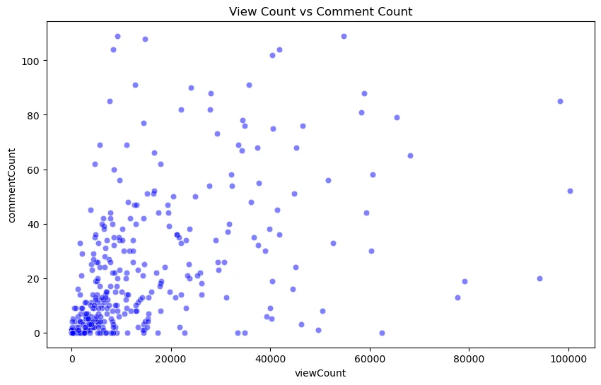
-
A positive correlation is observed here, where videos with more views tend to have more comments.
-
Most data points are clustered at lower view and comment counts.
-
A few videos have high view counts with varying comment counts, indicating different levels of viewer engagement.
Code cell 112
plt.figure(figsize=(10, 6))
sns.scatterplot(x='viewCount', y='likeCount', data=filtered_v_stat, color='green', alpha=0.5)
plt.title('View Count vs Like Count')
plt.show()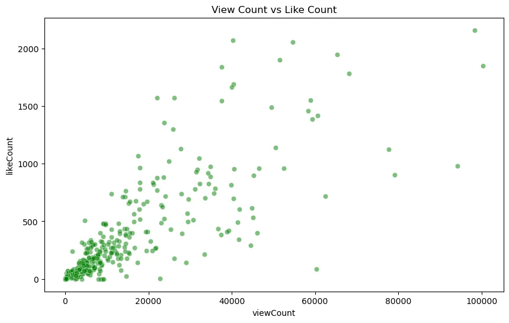
-
There is a positive correlation between view count and like count, indicating that videos with more views generally receive more likes.
-
The data points are concentrated at lower values, with some outliers having significantly higher like counts.
-
A few videos with high view counts but moderate like counts suggest variability in engagement.
Code cell 114
plt.figure(figsize=(10, 6))
sns.scatterplot(x='commentCount', y='likeCount', data=filtered_v_stat, color='purple', alpha=0.5)
plt.title('Comment Count vs Like Count')
plt.show()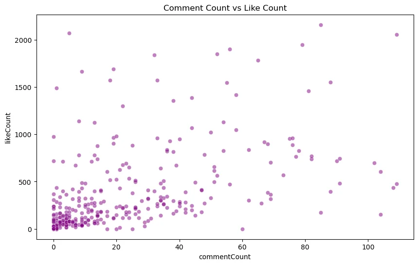
-
There is a positive correlation between comment count and like count, suggesting that videos with more comments also receive more likes.
-
The majority of data points are concentrated at lower values.
-
The spread of data points indicates that while most videos have low comment and like counts, there are notable exceptions with high engagement.
Trend Investigation
Setting up groupby's
Code cell 118
views_per_year = v_stat.groupby('year')['viewCount'].sum().reset_index(name='y_view_count')
views_per_month = v_stat.groupby(['year', 'month'])['viewCount'].sum().reset_index(name='m_view_count')
#checking
views_per_year| year | y_view_count | |
|---|---|---|
| 0 | 2019 | 65250326 |
| 1 | 2020 | 25859283 |
| 2 | 2021 | 43190410 |
| 3 | 2022 | 27252555 |
| 4 | 2023 | 17484316 |
| 5 | 2024 | 538605 |
Bar Graphs
Yearly View Count Trend of Data Science and AI-related Videos
Code cell 121
plt.figure(figsize=(10, 6))
sns.barplot(x='year', y='y_view_count', data=views_per_year)
plt.title('Yearly View Count Trend of Data Science and AI-related Videos')
plt.xlabel('Year')
plt.ylabel('Number of Views')
plt.show()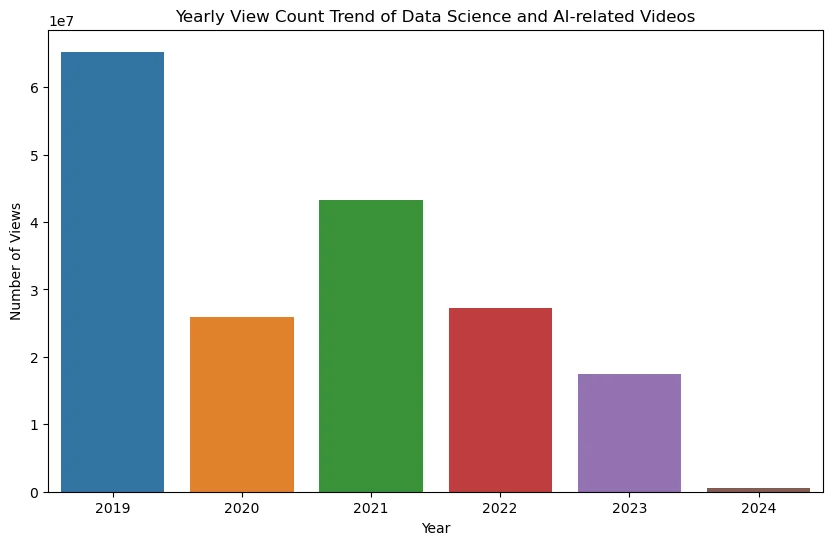
-
Peak Year: 2019 was the peak year with the highest number of views for Data Science and AI-related videos.
-
Fluctuations: There is a noticeable fluctuation in the number of views over the years. After the peak in 2019, views dropped in 2020, rose again in 2021, and then started to decline.
-
Recent Trend: The most recent year, 2024, shows a dramatic decrease in views compared to previous years.
- Possible Analysis: This could be due to various factors like changes in content popularity, shifts in viewer interest, external influences affecting viewership or likely due to incomplete data for the year.
Monthly View Count Trend of Data Science and AI-related Videos
Code cell 124
plt.figure(figsize=(14, 7))
# used this to group by and plot the data otherwise I had to create a new year_month column.
views_per_month = v_stat.groupby(['year', 'month'])['viewCount'].sum()
views_per_month.plot(kind='bar')
plt.title('Monthly View Count Trend of Data Science and AI-related Videos')
plt.xlabel('Year-Month')
plt.ylabel('Number of Views')
plt.show()
# views_per_month #for checking the output
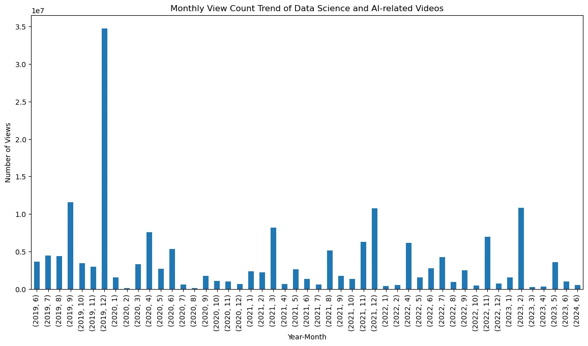
The chart shows the monthly view count trend for data science and AI-related videos from 2019 to 2024.
-
High Peaks: Significant spikes in viewer count throughout the months especially in December 2019
-
General Fluctuations: Viewercount varies month-to-month with notable peaks in December 2019 and December 2021, indicating periodic increases in interest.
-
Low Activity: Several months show low view counts, especially towards the end of 2023 and into 2024.
Time Series Graphs
Yearly View Count Trend of Data Science and AI-related Videos
Code cell 128
plt.figure(figsize=(14, 7))
sns.lineplot(x='year', y='y_view_count', data=views_per_year, marker='o', linewidth=2, markersize=12)
plt.title('Yearly View Count Trend of Data Science and AI-related Videos')
plt.xlabel('Years')
plt.ylabel('Number of Views')
plt.show()
#views_per_year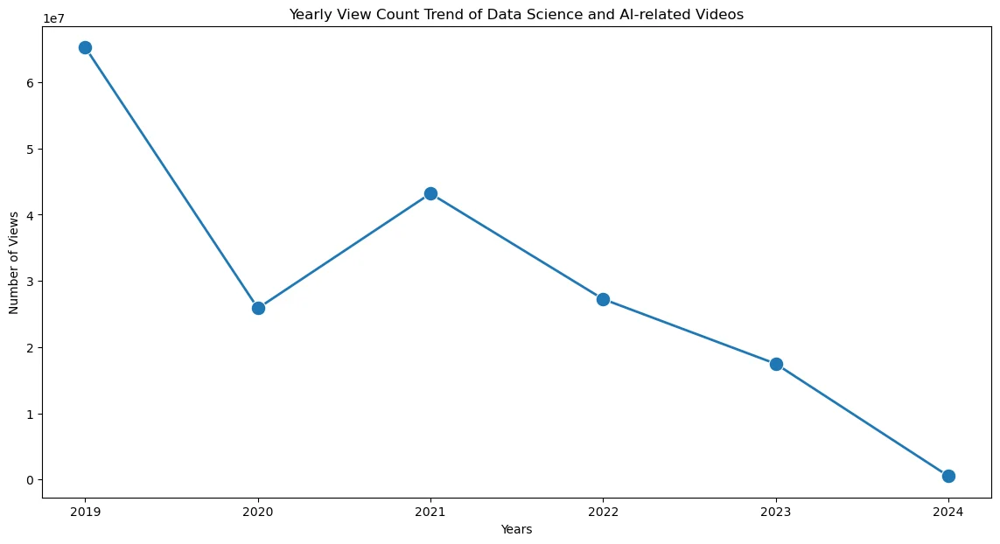
- Initial High Peak: 2019 witnessed the highest view count, suggesting a peak interest in data science and AI-related content during that year.
- Subsequent Decline: There was a significant drop in view counts in 2020, followed by a recovery in 2021, although not reaching the heights of 2019.
- Steady Decline: From 2021 onwards, there is a consistent downward trend in the view counts, indicating a gradual decline in interest.
The overall declining trend could be attributed to several factors, including market saturation, changes in viewer interests, or the emergence of new topics that overshadow data science AI.
Monthly View Count Trend of Data Science and AI-related Videos
Code cell 131
# Each year in a separate plot
views_per_month = v_stat.groupby(['year', 'month'])['viewCount'].sum().reset_index(name='m_view_count')
g = sns.FacetGrid(views_per_month, col="year", col_wrap=2, height=3, aspect=1.5, palette='tab10') #setting up the grids
g.map(sns.lineplot, "month", "m_view_count", marker="o")
#setting up labels and titles
g.set_titles("{col_name}")
g.set_axis_labels("Months", "Number of Views")
g.fig.suptitle('Monthly View Count Trend of Data Science and AI-related Videos', y=1.10)# Title and location of title.
plt.show()
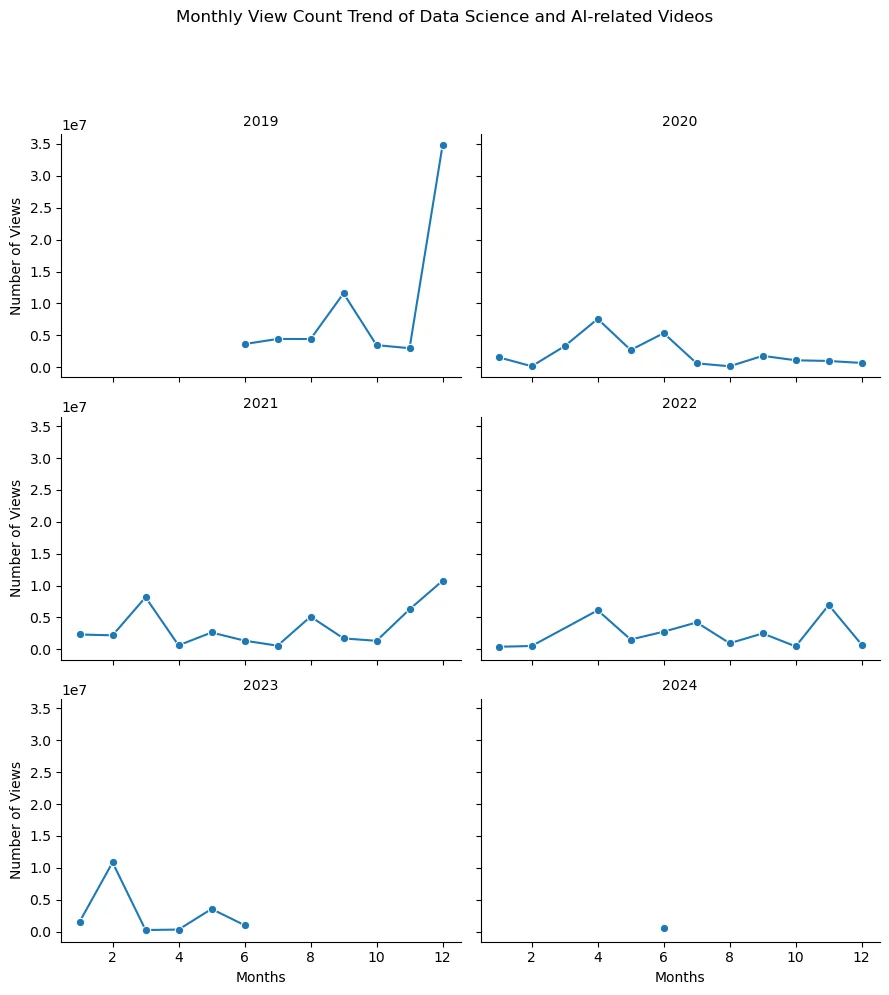
- The overall trend from 2019 to 2024 shows a decline in interest for data science and AI-related videos. The initial high in 2019 is not replicated in subsequent years.
- There are no consistent seasonal patterns except for the notable December spike in 2019. Other years show random fluctuations.
Yearly Trend of View, Like, and Comment Counts of Data Science and AI-related Videos (Time Series)
Code cell 134
#importing funcformatter for changing unit of y axis for view count
from matplotlib.ticker import FuncFormatter
monthly_stats = v_stat.groupby(['year', 'month']).agg({
'viewCount': 'sum',
'likeCount': 'sum',
'commentCount': 'sum'
}).reset_index()
#it takes argument and divides by 1000000 and returns an integer
formatter = FuncFormatter(lambda y, _: int(y / 1000000))
# Plot the trends
plt.figure(figsize=(14, 10))
# View Count
plt.subplot(3, 1, 1)
sns.lineplot(data=monthly_stats, x='year', y='viewCount', errorbar=None, marker='o')
plt.gca().yaxis.set_major_formatter(formatter) # formatter applied to y axis
plt.title('Yearly View Count Trend')
plt.xlabel('Year')
plt.ylabel('View Count (in Millions)')
# Like Count
plt.subplot(3, 1, 2)
sns.lineplot(data=monthly_stats, x='year', y='likeCount', errorbar=None, marker='o')
plt.title('Yearly Like Count Trend')
plt.xlabel('Year')
plt.ylabel('Like Count')
# Comment Count
plt.subplot(3, 1, 3)
sns.lineplot(data=monthly_stats, x='year', y='commentCount', errorbar=None, marker='o')
plt.title('Yearly Comment Count Trend')
plt.xlabel('Year')
plt.ylabel('Comment Count')
plt.tight_layout()
plt.show()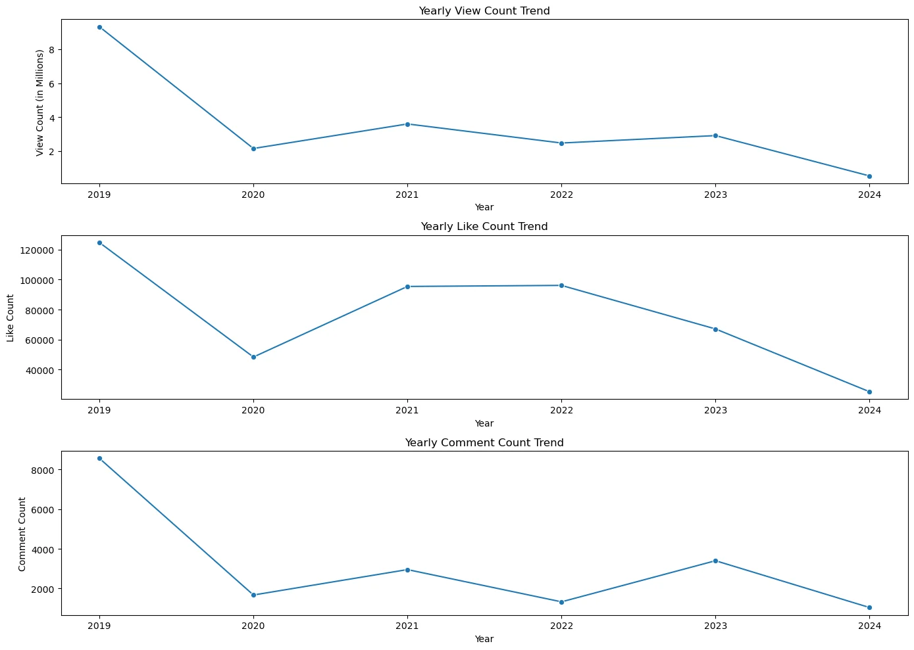
Yearly View Count - The view count starts at a high in 2019, drops significantly in 2020, and then shows a gradual recovery from 2021 to 2023 before declining again in 2024. - Conclusion: The view counts suggest some fluctuations with no consistent increasing trend.
Yearly Like Count Trend - The like count also starts high in 2019, drops in 2020, lower peaks in 2021 & 2022, and then shows a declining trend through 2024. - Conclusion: Similar to the view counts, the like counts suggest some fluctuations with no consistent increasing trend.
Yearly Comment Count Trend - The comment count is highest in 2019, drops significantly in 2020, shows some recovery in the subsequent years, but overall remains lower than the 2019 peak. - Conclusion: The trends in comment counts further support some fluctuations with no consistent increasing trend.
- The stacked bar plot shows the yearly distribution of videos across categories.
- The "Education" category consistently has the highest number of videos each year, with variations in other categories.
5. Hypothesis Testing
Null Hypothesis (H0): The mean view count/like count/comment count is the same across all years.
Alternative Hypothesis (H1): At least one year's mean view count/like count/comment count is different from the others.
Statistical Summary
Code cell 140
v_stat.describe()| categoryId | viewCount | likeCount | commentCount | year | month | day | title_count | |
|---|---|---|---|---|---|---|---|---|
| count | 567.000000 | 5.670000e+02 | 567.000000 | 567.000000 | 567.000000 | 567.000000 | 567.000000 | 567.000000 |
| mean | 26.560847 | 3.167116e+05 | 7202.723104 | 266.996473 | 2021.447972 | 6.403880 | 16.135802 | 12.186949 |
| std | 2.223251 | 1.452242e+06 | 32899.929048 | 1287.553619 | 1.506297 | 3.156269 | 8.068451 | 3.392515 |
| min | 1.000000 | 0.000000e+00 | 0.000000 | 0.000000 | 2019.000000 | 1.000000 | 1.000000 | 2.000000 |
| 25% | 27.000000 | 4.548500e+03 | 79.000000 | 4.000000 | 2020.000000 | 5.000000 | 10.000000 | 10.000000 |
| 50% | 27.000000 | 1.538300e+04 | 378.000000 | 25.000000 | 2021.000000 | 6.000000 | 17.000000 | 13.000000 |
| 75% | 27.000000 | 1.033835e+05 | 2182.000000 | 109.500000 | 2022.000000 | 9.000000 | 22.000000 | 15.000000 |
| max | 29.000000 | 2.509365e+07 | 606153.000000 | 20613.000000 | 2024.000000 | 12.000000 | 31.000000 | 22.000000 |
Testing Skewness and Kurtosis
-
Skewness - Skewness is a measure of the asymmetry of a distribution.
- Positive Skewness: The right tail (higher values) is longer or fatter than the left tail
- Negative Skewness: The left tail (lower values) is longer or fatter than the right tail.
-
Kurtosis - Kurtosis is a measure of the "tailedness" of a distribution.
- High Kurtosis: Tails are fatter and higher than those of a normal distribution, Indicates a higher likelihood of extreme values
- Low Kurtosis: Tails are thinner and lower than those of a normal distribution, Indicates fewer and less extreme outliers.
- Normal Kurtosis: Tails are similar to those of a normal distribution.
Code cell 143
# Compute skewness and kurtosis
skewness = v_stat[['viewCount', 'likeCount', 'commentCount']].skew()
kurtosis = v_stat[['viewCount', 'likeCount', 'commentCount']].kurtosis()
# Combine skewness and kurtosis into one DataFrame
shape_statistics = pd.DataFrame({'Skewness': skewness, 'Kurtosis': kurtosis})
shape_statistics| Skewness | Kurtosis | |
|---|---|---|
| viewCount | 11.094235 | 162.125599 |
| likeCount | 12.315096 | 201.562361 |
| commentCount | 10.680592 | 137.645047 |
Generally - Kurtosis > 3, indicating higher likelihood of extreme values (outliers). - Kurtosis around 3, indicating a normal distribution.
- Positive Skewness: The right tail is longer or fatter, indicating that the bulk of the values lie to the left of the mean. This is also called right-skewed.
- Negative Skewness: The left tail is longer or fatter, indicating that the bulk of the values lie to the right of the mean. This is also called left-skewed.
ANOVA (Analysis of Variance)
One-way ANOVA (Analysis of Variance) is a statistical method used to determine whether there are any statistically significant differences between the means of three or more independent (unrelated) groups. It essentially extends the t-test, which compares the means of two groups, to more than two groups.
Knowing,
F= Within-group Variance / Between-group Variance
p-value indicates the probability that the observed differences between group means occurred by chance.
Also as discovered from the statistical summary and Skewness and Kurtosis tests there seems to be evidence of significant outliers within 'viewCount', 'likeCount' and 'commentCount'
in order to reduce the outliers I have filtered the column data to 75% quantile as the largest jump is observed between 75 and max.
Code cell 148
#filtering the dataset to remove outliers for the purposed of distribution
view_count_filtered = v_stat['viewCount'].quantile(0.75)
like_count_filtered = v_stat['likeCount'].quantile(0.75)
commnet_count_filtered = v_stat['commentCount'].quantile(0.75)
filtered_v_stat = v_stat[(v_stat['viewCount'] <= view_count_filtered) &
(v_stat['likeCount'] <= like_count_filtered) &
(v_stat['commentCount'] <= commnet_count_filtered)
]ANOVA testing for 'viewCount'
Code cell 150
import scipy.stats as stats
# Perform ANOVA to test the difference in mean view count between different years
f_stat, p_val = stats.f_oneway(
filtered_v_stat[filtered_v_stat['year'] == 2019]['viewCount'],
filtered_v_stat[filtered_v_stat['year'] == 2020]['viewCount'],
filtered_v_stat[filtered_v_stat['year'] == 2021]['viewCount'],
filtered_v_stat[filtered_v_stat['year'] == 2022]['viewCount'],
filtered_v_stat[filtered_v_stat['year'] == 2023]['viewCount'],
filtered_v_stat[filtered_v_stat['year'] == 2024]['viewCount']
)
print(f'F_Statistic: {f_stat}, P-Value: {p_val}')
if p_val < 0.05:
print('The difference in mean view count is statistically significant.')
else:
print('The difference in mean view count is not statistically significant.')
-
The F-statistic is 15.54, which is quite high, indicating a large ratio of between-group variance to within-group variance.
- a large difference between the mean view counts of the different years compared to the variation within each year.
-
The p-value is extremely low (essentially zero), much less than the significance level of 0.05.
- meaning the differences in view counts between years are not due to chance.
Conclusion: The difference in mean view count between the years is statistically significant.
ANOVA testing for 'likeCount'
Code cell 153
# Perform ANOVA to test the difference in mean like count between different years
f_stat, p_val = stats.f_oneway(
filtered_v_stat[filtered_v_stat['year'] == 2019]['likeCount'],
filtered_v_stat[filtered_v_stat['year'] == 2020]['likeCount'],
filtered_v_stat[filtered_v_stat['year'] == 2021]['likeCount'],
filtered_v_stat[filtered_v_stat['year'] == 2022]['likeCount'],
filtered_v_stat[filtered_v_stat['year'] == 2023]['likeCount'],
filtered_v_stat[filtered_v_stat['year'] == 2024]['likeCount']
)
print(f'F_Statistic: {f_stat}, P-Value: {p_val}')
if p_val < 0.05:
print('The difference in mean like count is statistically significant.')
else:
print('The difference in mean like count is not statistically significant.')- The F-statistic is 12.51, which indicates a significant ratio of between-group variance to within-group variance.
- a large difference between the mean like counts of the different years compared to the variation within each year.
- The p-value is very low (essentially zero), much less than the significance level of 0.05.
- meaning the differences in like counts between years are not due to chance.
Conclusion: The difference in mean like count between the years is statistically significant.
ANOVA testing for 'commentCount'
Code cell 156
# Perform ANOVA to test the difference in mean comment count between different years
f_stat, p_val = stats.f_oneway(
filtered_v_stat[filtered_v_stat['year'] == 2019]['commentCount'],
filtered_v_stat[filtered_v_stat['year'] == 2020]['commentCount'],
filtered_v_stat[filtered_v_stat['year'] == 2021]['commentCount'],
filtered_v_stat[filtered_v_stat['year'] == 2022]['commentCount'],
filtered_v_stat[filtered_v_stat['year'] == 2023]['commentCount'],
filtered_v_stat[filtered_v_stat['year'] == 2024]['commentCount']
)
print(f'F_Statistic: {f_stat}, P-Value: {p_val}')
if p_val < 0.05:
print('The difference in mean comment count is statistically significant.')
else:
print('The difference in mean comment count is not statistically significant.')-
The F-statistic is 13.61, indicating a substantial ratio of between-group variance to within-group variance.
- a large difference between the mean comment counts of the different years compared to the variation within each year.
-
The p-value is extremely low (essentially zero), much less than the significance level of 0.05.
- meaning the differences in comment counts between years are not due to chance.
Conclusion: The difference in mean comment count between the years is statistically significant.
6. Conclusion
Conclusion:
Based on the results of the ANOVA tests, we can conclude that there have been statistically significant changes in the view counts, like counts, and comment counts of YouTube videos related to data science and AI over recent years. This indicates that the trend in data science and AI-related videos on YouTube has changed over the years.
Further investigation points:
There has been an overall decrease in trend. - The overall decrease in trend could be from many different factors - e.g In 2019, YouTube’s algorithm heavily promoted older content, which helped videos gain traction over time. This increased overall view counts as older, already popular videos continued to attract views. - further investigations required to understand why there might be a decrease in trend overall. - more data from 2024 could provide more complete insight.
To End with....
Code cell 161
# from wordcloud import WordCloud, STOPWORDS
# # Sample DataFrame creation for context
# # video_stats = pd.DataFrame({'title': ['Google Launched 5 FREE Data Science Courses!', 'Machine Learning vs Data Science', '10 ML algorithms in 45 minutes', 'Data Science Vs Machine Learning- Which is Better?', 'Books Recommendation system project']})
# # Define stopwords
# stop_words = set(STOPWORDS)
# # Remove stopwords from the titles
# v_stat['title_no_stopwords'] = v_stat['title'].apply(lambda x: [item for item in str(x).split() if item.lower() not in stop_words])
# # Combine all words into a single list
# all_words = [word for title in v_stat['title_no_stopwords'] for word in title]
# all_words_str = ' '.join(all_words)
# # Function to plot word cloud
# def plot_cloud(wordcloud):
# plt.figure(figsize=(20, 10))
# plt.imshow(wordcloud, interpolation='bilinear')
# plt.axis('off')
# # Generate word cloud
# wordcloud = WordCloud(width=2000, height=1000, random_state=1, background_color='black', colormap='viridis', collocations=False).generate(all_words_str)
# # Plot the word cloud
# plot_cloud(wordcloud)
# plt.title('Word Cloud for Video Titles')
# plt.show()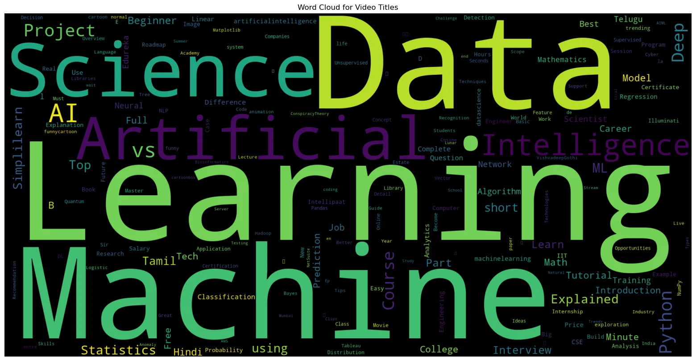